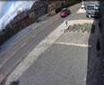

MD Tuning Guide
1 Ten Sets of MD Parameters¶
1.1 Overview¶
We provide 10 sets of parameters of MD model for different sensitive degree (1~10, and 10 means the most sensitive parameters set). MD with a more sensitive parameter set can produce results with a lower miss rate and higher false alarm.
1.2 Scene Test¶
The MD performance is evaluated using video tests and real-world tests.
Video test
Indoor
Shadow remove = 1 Shadow remove = 0
Stable moving scene
Outdoor
Dramatic AE changes scene

Real-world tests
Un-moving object. (e.g. a statue in the room)
Repetitively change of scenarios. (e.g. two images are played alternately every 15 seconds)
Progressive change of light in the scene.
Objects which keep moving in the scene.
1.3 Test Result¶
| sensitive | ALPHA | TB | SIGMA | Shadow remove |
|---|---|---|---|---|
| 10 | 32 | 11 | 7 | 0 |
| 9 | 65 | 11 | 7 | 0 |
| 8 | 164 | 11 | 7 | 0 |
| 7 | 262 | 11 | 7 | 0 |
| 6 | 320 | 11 | 7 | 1 |
| 5 | 320 | 16 | 7 | 1 |
| 4 | 320 | 25 | 7 | 1 |
| 3 | 640 | 25 | 7 | 1 |
| 2 | 1200 | 11 | 7 | 1 |
| 1 | 1200 | 25 | 7 | 1 |
| DEFAULT | |||
|---|---|---|---|
| TBG = 29490 | |||
| ONE_MIN_ALPHA = 32768-ALPHA | |||
| INIT_WEIGHT=7 | |||
| MODEL_UPDATE =0 | |||
| TG=9 | |||
| PRUNE=ALPHA*1.6 | |||
| Shadow remove = 0 | ||
|---|---|---|
| LUMA_DIFF_THRES =0 | ||
| TEXT_DIFF_THRES=0 | ||
| TEXT_THRES=50 | ||
| TEXT_RATIO_THRES=127 | ||
| Shadow remove = 1 | ||
|---|---|---|
| LUMA_DIFF_THRES =30 | ||
| TEXT_DIFF_THRES=50 | ||
| TEXT_THRES=50 | ||
| TEXT_RATIO_THRES=50 | ||
1.4 Tuning Suggestion¶
In the case of dramatic light change or moving shadow, a higher ALPHA value is suggested to reduce the false alarm. However, the side effect is that a slowly moving object might be detected as background.
In the case of dark shadow, a higher TB value is suggested. The side effect is that the detected foreground of object might be broken.
If the result of motion detection is not stable, we suggest to adjust TG to get a more stable result.
1.5 Scene Suggestion¶
MD is not suitable for the moment when turning on or turning off the light. The results of MD should be skipped at this moment for about 10 seconds.
MD should be used with a fixed-camera which captures a stable scene. Once camera moves, MD might need more time to get a stable background model.
The size of a detected moving object should be larger than 1 micro-block (MB)
2 Revision History¶
| Revision | Date | Author | Changes |
|---|---|---|---|
| 0.1 | 2021/06/30 | Sophia | First formal version |
| 0.2 | 2021/07/02 | Sophia | Update document format and description |